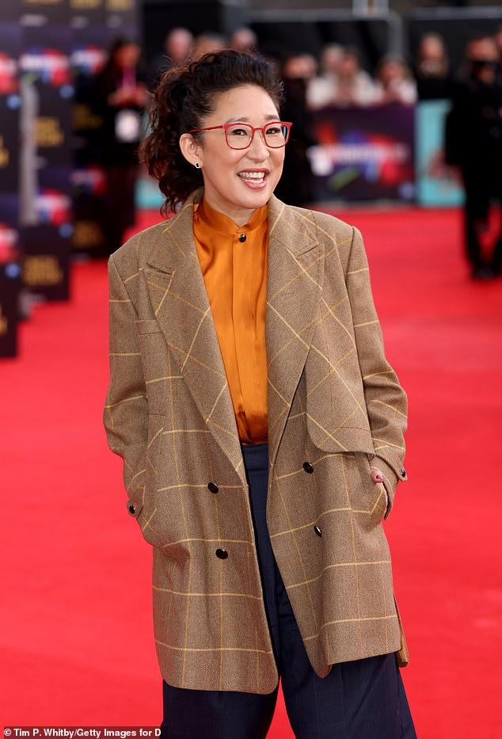
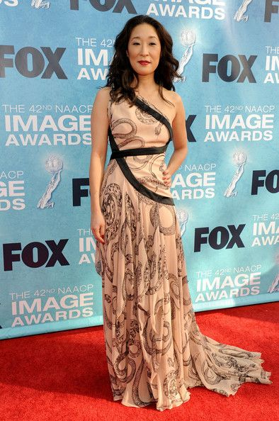
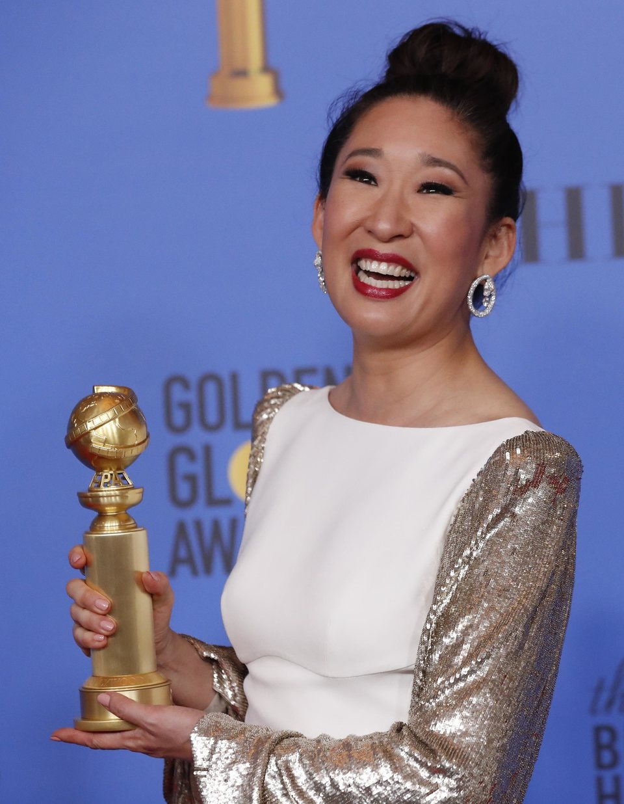

| Inicio | Biografia | Logros | Contacto |
SANDRA OH |
|||
| canadiense de origen surcoreano hizo historia tres veces. Por primera vez para alguien de raíz oriental, el domingo 6 de enero condujo los Premios Globo de Oro y, a la vez, ganó como "Mejor actriz de serie dramática" por la revelación de 2018: Killing Eve. El 13 de enero triunfó en el mismo rubro de los Critics’ Choice Awards por este thriller irreverente que se estrenará en la Argentina el 3 de febrero a las 23, por Paramount Channel. | |||
|  |  |  | |
| derechos reservador, 2022 | |||